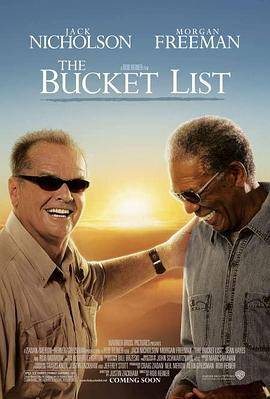

遗愿清单 / The Bucket List
又名：玩转身前事(港) / 一路玩到挂(台) / 拿命开玩笑 / 乐着活下去
作品信息
| 导演 | 罗伯·莱纳 |
| 编剧 | 贾斯汀·扎克汉姆 |
| 主演 | 杰克·尼科尔森 / 摩根·弗里曼 / 西恩·海耶斯 / 贝弗利·陶德 / 罗伯·莫洛 / 阿方索·弗里曼 / 罗威娜·金 / 韦尔达·布里奇斯 / 伊恩·安东尼·代尔 / 詹妮弗·迪弗朗西斯科 / 安吉拉·加德纳 / 诺尔·古格雷米 / 乔纳森·赫尔南德斯 / 休·B·赫鲁伯 / 理查德·麦克格纳格尔 / 丸山凯伦 / 安波米德 / 尼基·诺瓦克 / 克里斯托弗·斯塔普勒顿 / 泰勒.安.汤普森 / 亚历克斯·崔贝克 / Annton Berry Jr. / Destiny Brownridge / Brian Copeland / 乔丹·朗德 / Jonathan Mangum / 瑟瑞娜·里德 / MaShae Alderman / Vin Scully |
| 类型 | 剧情 / 喜剧 / 冒险 |
| 制片国家/地区 | 美国 |
| 语言 | 英语 |
| 上映日期 | 2007-12-25(多伦多电影节) / 2008-01-11(美国) |
| 片长 | 97 分钟 |
| IMDb | tt0825232 |
最后一次看到是 2026-08-01T11:06:53+10:00 · 豆瓣原页